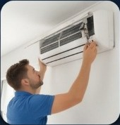

Climatização
Ar-condicionado com baixo desempenho
Exemplo de diagnóstico de falha no sistema, investigação de vazamento e avaliação dos componentes.
Resultado ilustrativo: desempenho restabelecido após a intervenção descrita.
Como cuidamos de casos assim
A avaliação começa pela coleta dos sintomas e pela inspeção do equipamento. A causa e a solução só podem ser confirmadas após análise técnica no local.